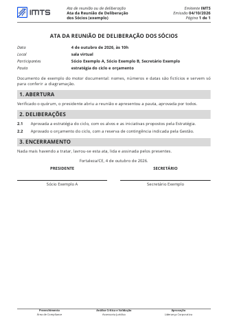
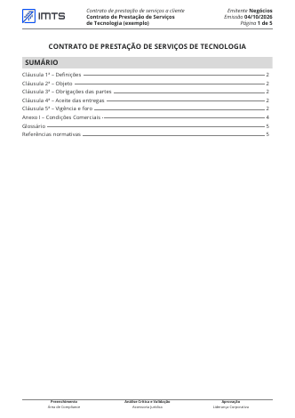
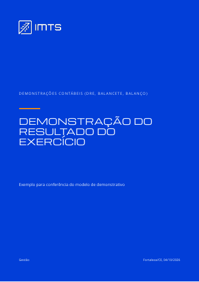
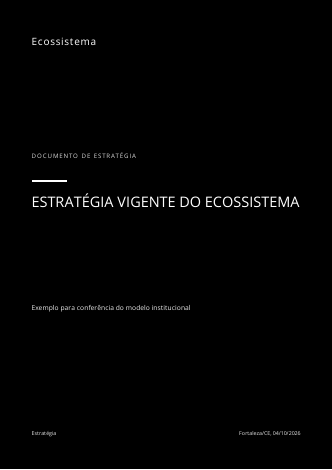
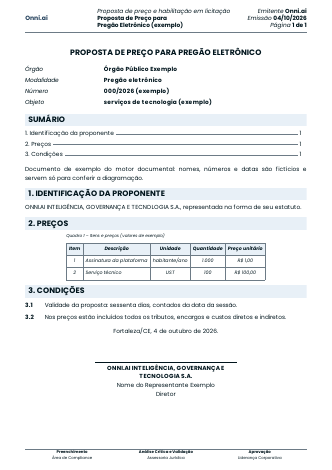
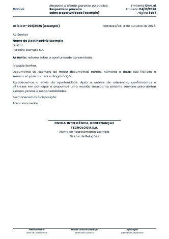
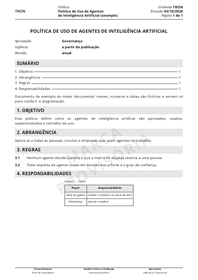
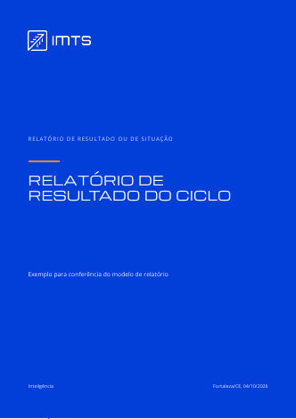

Biblioteca do Motor Documental
Uma amostra por modelo de design, emitida pelo motor com as marcas IMTS, Onni, TRON e neutra. Cada ficha mostra a primeira página real do PDF e o registro da emissão: situação dos gates, páginas, ajustes automáticos da regra do terço e o hash do arquivo. Nomes, números e datas das amostras são fictícios.
Modelos 10Marcas 4Tipos no catálogo 38Saídas do modelo ligadas a um tipo 162 de 690Tarefas que redigem, revisam, emitem ou assinam 127
Amostras
Gates bloqueantes zerados nas dez. As três da Onni saem com o alerta de fonte substituta: a Nexa ainda não foi entregue e a Poppins entra no lugar, declarada. A da TRON leva a marca d'água de marca provisória e só pode ser interna.


Demonstrativo financeiro
Demonstrações contábeis (DRE, balancete, balanço)
sha-256 a90e4ffe5e2a9dd9…
Abrir o PDF

Licitação (B2G)
Proposta de preço e habilitação em licitação
Alerta: Nexa indisponível aqui: Poppins no lugar, declarado em cada emissão
sha-256 61dfaff14ab1ee41…
Abrir o PDF
Ofício e correspondência
Resposta a cliente, parceiro ou público
Alerta: Nexa indisponível aqui: Poppins no lugar, declarado em cada emissão
sha-256 0cb3768908bc36b2…
Abrir o PDF
Proposta comercial
Proposta comercial
Alerta: Nexa indisponível aqui: Poppins no lugar, declarado em cada emissão
sha-256 5947fc790bee7667…
Abrir o PDF
Catálogo de tipos
Tipos de documento formal tirados das saídas do modelo organizacional (versão 2026-10-03.2). A ligação de cada tipo às saídas e tarefas foi feita por regra de texto e está marcada para revisão da ID-04. As saídas que são passo de fluxo (pedido, lista, decisão de rever) ficam como registro do motor e não viram PDF.
| Modelo | Tipo | Alcance | Saídas de origem | Tarefas |
|---|---|---|---|---|
| Institucional | Proposta para decisão (memorando)proposta-interna | interno | 10 | 9 |
| Institucional | Declaração de identidadedeclaracao-identidade | externo | 2 | 1 |
| Institucional | Documento de estratégiaestrategia | interno | 2 | 1 |
| Contratual | Contrato de prestação de serviços a clientecontrato-cliente | externo | 9 | 9 |
| Contratual | Contrato com fornecedorcontrato-fornecedor | externo | 0 | 0 |
| Contratual | Termo aditivo, renovação ou distratoaditivo | externo | 1 | 3 |
| Contratual | Acordo de parceria ou de oferta conjuntaacordo-parceria | externo | 1 | 1 |
| Contratual | Contrato de compra e venda de participaçãocontrato-societario | externo | 1 | 5 |
| Contratual | Autorização de uso de marcalicenca-marca | externo | 1 | 1 |
| Contratual | Acordo de serviço entre círculos ou empresasacordo-servico | interno | 1 | 0 |
| Contratual | Termo de pagamento, parcelamento ou transaçãotermo-negociacao | externo | 2 | 3 |
| Proposta comercial | Proposta comercialproposta-comercial | externo | 3 | 5 |
| Licitação (B2G) | Proposta de preço e habilitação em licitaçãoproposta-b2g | externo | 2 | 1 |
| Licitação (B2G) | Ata de registro de preçosarp | externo | 1 | 4 |
| Relatório técnico | Plano (estratégico, de ação, de saída, de correção)plano | interno | 19 | 12 |
| Relatório técnico | Diagnóstico, estudo ou análisediagnostico | interno | 8 | 4 |
| Relatório técnico | Relatório de resultado ou de situaçãorelatorio | interno | 29 | 24 |
| Relatório técnico | Parecerparecer | interno | 3 | 2 |
| Relatório técnico | Relatório de auditoria ou de apuraçãoauditoria | interno | 1 | 1 |
| Ata e pauta | Ata de reunião ou de deliberaçãoata | interno | 9 | 7 |
| Ata e pauta | Pauta e convocaçãopauta | interno | 4 | 0 |
| Ofício e correspondência | Ordem de compra a fornecedorordem-compra | externo | 1 | 1 |
| Ofício e correspondência | Resposta a titular de dados (LGPD)resposta-titular | externo | 2 | 1 |
| Ofício e correspondência | Resposta a cliente, parceiro ou públicoresposta-externa | externo | 5 | 5 |
| Ofício e correspondência | Comunicado internocomunicado | interno | 3 | 2 |
| Ofício e correspondência | Notificação formalnotificacao | externo | 1 | 0 |
| Ofício e correspondência | Declaraçãodeclaracao | externo | 0 | 0 |
| Demonstrativo financeiro | Racional financeiro de contratoracional-financeiro | interno | 3 | 1 |
| Demonstrativo financeiro | Plano de contas e plano tributárioplano-contas | interno | 2 | 1 |
| Demonstrativo financeiro | Demonstrações contábeis (DRE, balancete, balanço)demonstracoes | externo | 1 | 1 |
| Demonstrativo financeiro | Orçamento e previsão financeiraorcamento | interno | 8 | 4 |
| Demonstrativo financeiro | Fatura e cobrançafatura | externo | 1 | 1 |
| Demonstrativo financeiro | Folha e demonstrativo de pagamentofolha | interno | 2 | 0 |
| Política e manual | Políticapolitica | interno | 2 | 3 |
| Política e manual | Regras e alçadasregra-alcadas | interno | 2 | 1 |
| Política e manual | Manual, método ou padrãomanual-metodo | interno | 17 | 11 |
| Política e manual | Mandato da empresamandato | interno | 1 | 2 |
| Certificado | Certificado de reconhecimentocertificado | interno | 2 | 0 |